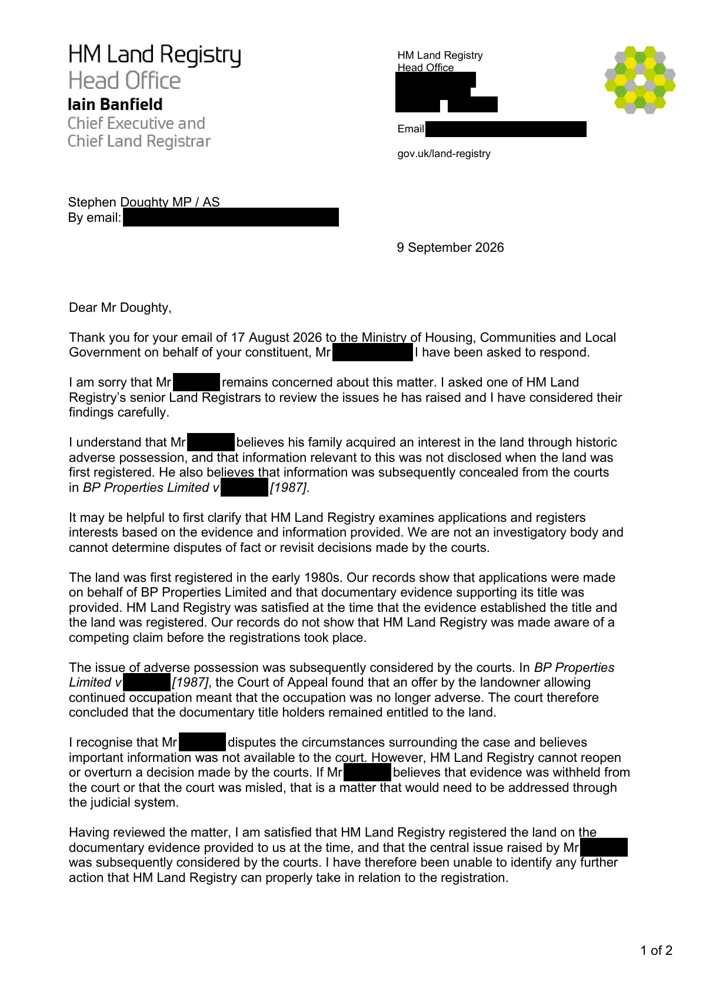

GHF-E106-R108-A1 substantive disclosure
260900 - Letter to Stephen Doughty MP.pdf

Transcript
1 of 2 HM Land Registry Head Office [address redacted] Email [email redacted] gov.uk/land-registry Stephen Doughty MP / AS By email: [email redacted] 9 September 2026 Dear Mr Doughty, Thank you for your email of 17 August 2026 to the Ministry of Housing, Communities and Local Government on behalf of your constituent, Requester. I have been asked to respond. I am sorry that Requester remains concerned about this matter. I asked one of HM Land Registry’s senior Land Registrars to review the issues he has raised and I have considered their findings carefully. I understand that Requester believes his family acquired an interest in the land through historic adverse possession, and that information relevant to this was not disclosed when the land was first registered. He also believes that information was subsequently concealed from the courts in BP Properties Limited v Buckler [1987]. It may be helpful to first clarify that HM Land Registry examines applications and registers interests based on the evidence and information provided. We are not an investigatory body and
Read more
cannot determine disputes of fact or revisit decisions made by the courts. The land was first registered in the early 1980s. Our records show that applications were made on behalf of BP Properties Limited and that documentary evidence supporting its title was provided. HM Land Registry was satisfied at the time that the evidence established the title and the land was registered. Our records do not show that HM Land Registry was made aware of a competing claim before the registrations took place. The issue of adverse possession was subsequently considered by the courts. In BP Properties Limited v Buckler [1987], the Court of Appeal found that an offer by the landowner allowing continued occupation meant that the occupation was no longer adverse. The court therefore concluded that the documentary title holders remained entitled to the land. I recognise that Requester disputes the circumstances surrounding the case and believes important information was not available to the court. However, HM Land Registry cannot reopen or overturn a decision made by the courts. If Requester believes that evidence was withheld from the court or that the court was misled, that is a matter that would need to be addressed through the judicial system. Having reviewed the matter, I am satisfied that HM Land Registry registered the land on the documentary evidence provided to us at the time, and that the central issue raised by Requester was subsequently considered by the courts. I have therefore been unable to identify any further action that HM Land Registry can properly take in relation to the registration. 2 of 2 I appreciate that this will not be the outcome Requester was hoping for, particularly given how long this matter has continued and how strongly he feels about it. Thank you for taking the time to raise his concerns with us. Yours sincerely, Iain Banfield Chief Executive and Chief Land Registrar
Artifact description
Forwards a response from HM Land Registry's Chief Executive and states a Ministry of Justice reply is still awaited.
| Catalogue ID | GHF-E106-R108-A1 |
|---|---|
| What it is | PDF document from Member of Parliament. Attached to an email received on 18 September 2026, their reference N610CGV. 2 pages. |
| From | Member of Parliament |
| Email received | 18 September 2026 |
| Their reference | N610CGV |
| Pages | 2 |
| File | 260900 - Letter to Stephen Doughty MP.pdf (113 KB) |
| State | Read |
Our integration
Part of the political representation thread with Member of Parliament opened 19 September 2026. The thread's standing classification is “substantive disclosure”. Statutory time: no statutory deadline.
Concern to test: whether this reply answers the question as asked, or a narrower one. Not checked against the original request wording here.
Related: The covering email · EV-0401 in the evidence catalogue · Timeline · Disclosure Dartboard